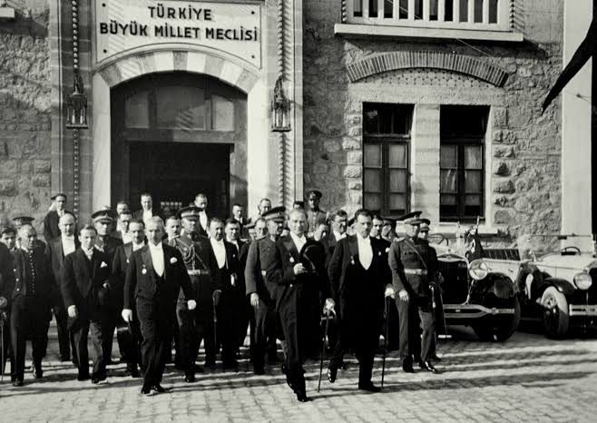

NOVA
TO THE CELESTIALS
NOVA MODEL UNITED NATIONS CONFERENCE
JUNE 28-29-30, 2025
#tothecelestials
WE AIM TO SERVE YOU THE BEST EXPERIENCE
GENERAL ASSEMBLY COMMITTEES
F.U.N. (Future United Nations)
Future UN committees will address key issues like climate change, global health, cybersecurity, AI ethics, and migration, focusing on global solutions for sustainability, peace, and equity.
UNODC
(United Nations Office on Drugs and Crime) helps countries fight drugs, crime, and terrorism by offering support, expertise, and promoting international cooperation.
IMF
The UN IMF Committee promotes global financial stability, fights money laundering, and supports transparent, cooperative economic policies. It also encourages international efforts to prevent illegal financial activities.
BMKP
Birleşmiş Milletler Kalkınma Programı (UNDP), yoksullukla mücadele, sürdürülebilir kalkınma, eğitim,gençlerin istihdamı ,sağlık ve çevre gibi alanlarda ülkeleri destekleyen bir kuruluştur.
Ready to join NOVAMUN 2025?
APPLY NOW
Early bird discount available until June 7th

Historical Crisis:
The Turkish Grand National Assembly
The Turkish Grand National Assembly is the legislative body of the Republic of Türkiye. It was established on April 23, 1920, with the aim of resisting the occupation of the Ottoman Empire by the Allied Powers
In this committee, we experience how the process of corruption within a party that has become a monopoly takes place from the perspective of dozens of deputies who had to stay in a single party and our National Chef İsmet İnönü.

Letter from Secretary General
Dear participants,
It is both a profound privilege and a sincere pleasure to extend my warmest welcome to you at this esteemed conference, NovaMUN 2025.
My name is Serra Demir, and I am truly honoured to be a part of this journey. Throughout my past MUN experiences, I have taken on various roles — each of them taught me unforgettable lessons and shaped some of the most valuable days of my journey.
I always say, "MUN is for everyone," and I wholeheartedly believe in that. When I first started, I was nervous too. There were even moments when I wanted to give up — simply because I didn’t trust myself enough. But here’s what I’ve learned: You don’t have to be the best in the room. What truly matters is striving to become the best version of yourself.
After all, a caterpillar can never turn into a butterfly unless it weaves its cocoon with its very own effort.
And please, never forget — for us, you come first. Not some so-called “career” no one really cares about. :)
Until then, take care of yourselves — see you in June!